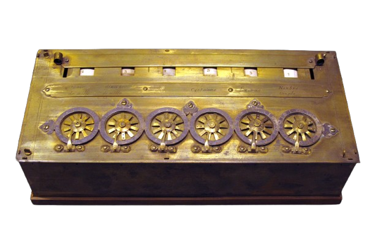
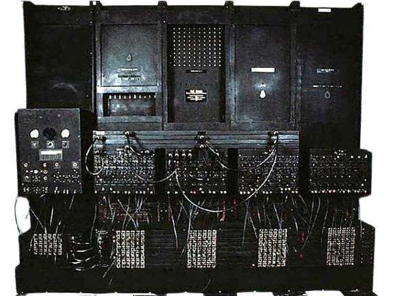
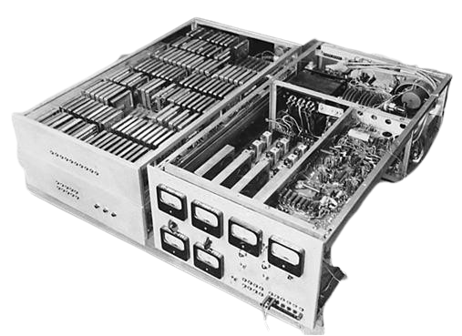
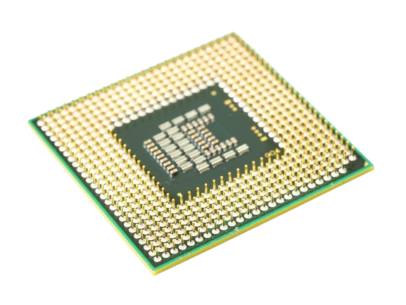

1642
Pascaline
Mesin hitung mekanik awal yang menjadi fondasi pemikiran komputasi.
Interactive Journey
Gerakkan karakter ke kanan untuk membuka tiap era komputasi. Saat sampai di pintu akhir, perjalanan akan selesai dan kamu bisa mengulang dari awal.

Mesin hitung mekanik awal yang menjadi fondasi pemikiran komputasi.

Konsep mesin serbaguna dengan gagasan input, proses, dan memori.

Komputer elektronik awal berukuran raksasa dengan daya komputasi besar.

Ukuran mengecil, efisiensi naik, dan komputer menjadi lebih andal.

CPU masuk ke satu chip kecil dan membuka jalan bagi komputer personal.

Komputer mulai masuk rumah dan kantor, lebih dekat dengan kehidupan sehari-hari.

Komputasi menjadi portabel dan terhubung secara global.

Daya komputasi berpindah ke genggaman dan selalu ikut bersama pengguna.
Desktop, cloud, AI, dan perangkat mobile hadir dalam ekosistem komputasi modern.